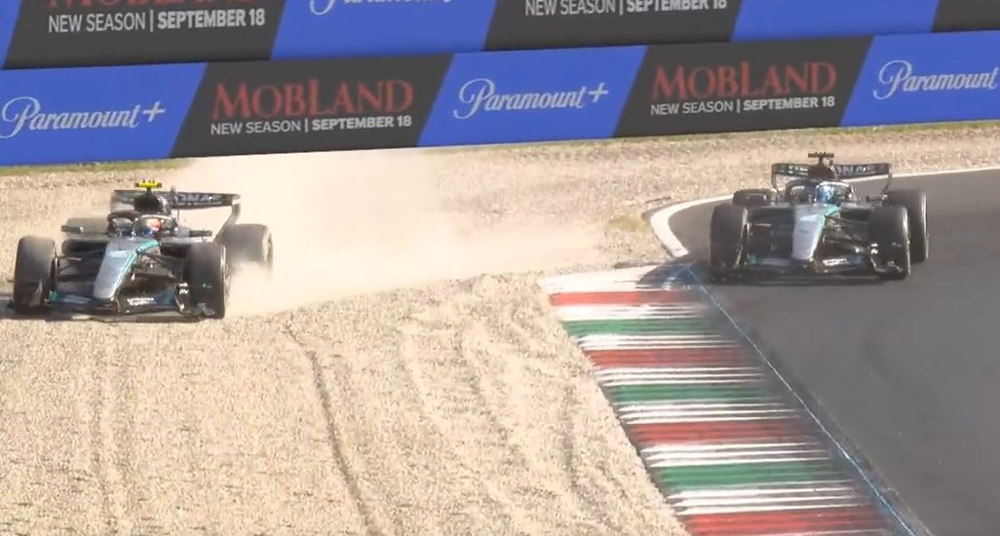
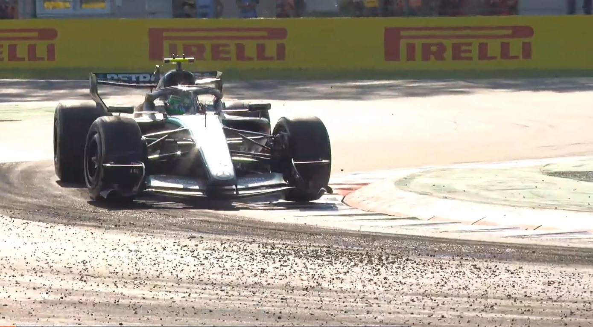
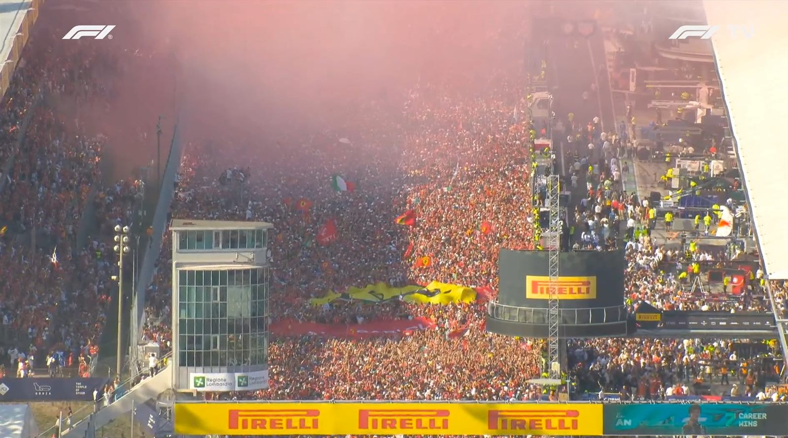

고속 우코너에서 리어가 돌았다
사고는 몬차의 마지막 코너 파라볼리카에서 일어났다.
F1 공식은 르클레르가 오스카 피아스트리(McLaren)와 자리를 다투던 중
“큰 스냅”이 발생해 파라볼리카 탈출부에서 크게 충돌했다고 기록했다.[2]
중계 화면으로 본 과정은 이랬다.
앞차의 더티에어가 차량에 작용해 다운포스가 낮아진 상태에서, 그립을 잡으려 트랙 끝까지 차를 몰았다.
앞타이어는 트랙 끝 라인에 정확히 닿고 멈췄지만, 좌측 리어 타이어가 초록색으로 도색된 트랙 바깥 구역의 배수구에 닿았다.
리어 스냅이 발생하기 직전 찍힌 최고 속도는 시속 234km였다 — 비공식 텔레메트리 계측치다.
그 결과 차는 그대로 그래블 트랩을 가로질러 타이어 방호벽에 크게 부딪혔다.[1]

영상 저작권 Formula One World Championship Ltd. F1 중계 화면 갈무리본이며, 갈무리와 게재는 RacingNews365가 했다.[10] 본 페이지는 이미지를 복제·저장하지 않고 해당 서버의 주소를 그대로 참조한다.
1랩부터 어긋났다
사고 전 두 바퀴 동안 르클레르의 레이스는 이미 흔들리고 있었다.
출발 직후 첫 시케인 탈출부에서 르클레르와 팀메이트 루이스 해밀턴이 근접했다.
르클레르가 해밀턴을 자갈밭으로 밀어냈고, 해밀턴은 10위까지 밀려났다.[1]
무전에서 해밀턴은 이렇게 말했다.
FIA는 이 상황을 심의했다. 스튜어드가 게시한 결정문은 다음과 같다.
2번 코너에서 벌어진 16번(르클레르)과 44번(해밀턴)의 접촉 건을 검토했고,
추가 조사는 하지 않는다는 뜻이다. 두 대 모두 페널티는 없었다.[5]
이후 르클레르는 막스 페르스타펜(Red Bull)에게 자리를 내주고 4위로 내려앉았다.[1]
그리고 그 4위를 피아스트리로부터 지키던 중 파라볼리카에서 사고가 났다.
팀메이트를 자갈밭으로 밀어낸 지 두 바퀴 만이었다.
방호벽을 다시 쌓아야 했다
충돌 직후 세이프티카가 투입됐고, 남은 차들이 3랩째를 도는 사이 레드플래그가 선언됐다.
출발은 현지시간 15시 03분, 사고는 15시 07분, 레드플래그는 15시 08분이었다.[1]
경기를 멈춘 이유는 잔해 수거만이 아니었다.
충격으로 타이어 방호벽 자체가 무너져 다시 쌓아야 했다.[1]
레드플래그 시점 순위
| POS | Driver | Team |
|---|---|---|
| 1 | 조지 러셀 | Mercedes |
| 2 | 피에르 가슬리 | Alpine |
| 3 | 막스 페르스타펜 | Red Bull |
| 4 | 프랑코 콜라핀토 | Alpine |
| 5 | 오스카 피아스트리 | McLaren |
| 6 | 랜도 노리스 | McLaren |
| 7 | 아비드 린드블라드 | Racing Bulls |
| 8 | 루이스 해밀턴 | Ferrari |
| 9 | 올리버 베어만 | Haas |
| 10 | 에스테반 오콘 | Haas |
| RET | 샤를 르클레르 | Ferrari |
레드플래그 선언 시점 중계 화면 표기 기준.[1] 이때 키미 안토넬리는 12위였다.
걸어 나왔지만,
메디컬센터로
홈에서 잃은 것
60년 만에, 이탈리아인이
몬차에서 이겼다
르클레르가 사라진 레이스는, 또 다른 이탈리아인의 것이 됐다.
키미 안토넬리(Mercedes)는 파워유닛 교체 페널티로[3] 19그리드에서 출발했다.[6]
르클레르의 사고로 레드플래그가 나왔을 때 그는 12위였다.[1]
엇갈린 타이어 전략
승부는 레드플래그 직후 갈렸다. 두 메르세데스가 각각 다른 전략을 택한 것이다.
첫 세 바퀴를 미디엄으로 달린 선두 조지 러셀이 하드로 갈아 끼웠고, 하드로 출발했던 안토넬리는 미디엄을 골랐다.[1]
변수는 랜스 스트롤이었다. 유압 계통 문제로 트랙사이드에 차를 세우면서 버추얼 세이프티카(VSC)가 발동됐다.[1]
VSC가 걸린 순간, 두 메르세데스의 간격은 0.483초였다. 사실상 붙어 있었다. 타이어 나이도 같았다.
러셀의 하드도, 안토넬리의 미디엄도 24랩을 쓴 상태였다.[1]
여기서 문제가 하나 생긴다. 두 대를 한꺼번에 부르면 더블 스택이 된다.
뒤차는 피트박스 앞에서 앞차의 작업이 끝날 때까지 멈춰 서 있어야 한다. 0.5초도 안 되는 간격이라면 그 대기 시간이 고스란히 손해다.
팀은 둘을 갈랐다.
러셀은 들어가지 않았다. 하드는 아직 수명이 남아 있었고 VSC도 곧 풀릴 참이었다.
지금 피트로 들어가 위험을 떠안느니, 하드 한 세트로 남은 거리를 전부 끌고 가는 쪽을 택했다.[1]
안토넬리는 들어갔다. 그의 미디엄도 24랩을 썼다. 수명이 완전히 끝난 것은 아니었지만
저속 코너에서 언더스티어가 나기 시작한 상태였다.
러셀이 하드로 해낸 것처럼 미디엄 한 세트로 50랩을 버티는 것은 무리였다.[1]
대신 팀은 무전에서 보듯 조건을 걸어 타이밍을 붙잡았다. VSC가 피트 진입로 부근에서 풀리면 그대로 나가고, 아니면 들어온다.
정지 시간을 내주는 대신 마지막 구간의 페이스를 산 것이다.[1]
| Driver | 1스틴트 (레드플래그 전) | 2스틴트 | 3스틴트 |
|---|---|---|---|
| 키미 안토넬리 | 하드 · 3랩 | 미디엄 · 25랩 | 미디엄 · 25랩 |
| 조지 러셀 | 미디엄 · 3랩 | 하드 · 50랩 | — |
중계 타이밍 화면의 타이어 이력 표기 기준.[1] 러셀은 레드플래그 이후 한 번도 피트에 들어가지 않았다.
팀 무전에서는 이미 경기 마지막 부근에서 접전이 예상되고 있었다.[1]
그 선택은 얼마를 벌었나 — 본지 계산
안토넬리의 피트 작업은 29랩에 이뤄졌다.
그 랩 그의 기록은 1분 49초 136, 러셀은 1분 38초 375였다. 한 바퀴에 10.761초를 잃었다.
앞선 28랩에서 피트 진입으로 잃은 2.962초와 VSC 발동 시점의 간격 0.483초를 더하면, 피트 직후 두 차의 격차는 약 14.2초가 된다.[1]
30랩부터 체커기까지 24바퀴 동안 안토넬리는 러셀에게서 18.160초를 되찾았다. 랩당 0.757초다.
여기서 피트 직후 격차를 빼면 3.954초 — 실제 최종 마진 3.857초와 0.097초 차이다. 계산이 결과와 맞물린다.[1]
피트 손실 세 가지
| 구분 | 시간 | 내용 |
|---|---|---|
| 피트레인 통과 | 24.963초 | 진입선에서 이탈선까지 절대 시간 |
| 그린플래그 실효 손실 | 23.410초 | 평상시 피트인의 순손실 |
| VSC 실효 손실 | 14.206초 | 안토넬리가 실제로 치른 값 |
그린플래그 값은 같은 레이스에서 VSC 없이 피트인한 리암 로슨의 기록으로 환산했다. 진입 시 격차 15.6초, 이탈 후 45.180초로 순손실 29.580초. 여기서 프런트윙 교체로 길어진 정지 시간(8.67초)을 표준 2.5초로 맞추면 23.410초가 된다.[1]
즉 VSC가 아껴준 시간은 9.204초다. 그린플래그 손실의 39%에 해당한다.
24바퀴 동안 되찾을 수 있는 18.160초로는 모자란다. 5.7초 차이로 졌다. 본지 계산 · 랩타임 실측 기반
아예 들어가지 않았다면 어땠을까. 두 차의 타이어 나이가 똑같이 24랩이니 페이스 우위가 생기지 않는다.
게다가 안토넬리 쪽은 미디엄에 이미 언더스티어가 나던 상태였다. 러셀을 넘을 근거가 없다.
이길 수 있는 경로는 하나뿐이었고, 그것이 VSC 피트인이었다.
마지막 몇 바퀴 — 자갈밭을 스치고
실제로 그렇게 됐다. 새 타이어의 안토넬리가 러셀을 따라잡았고, 1번 코너에서 정면으로 붙었다.
그는 레이싱 라인 바깥으로 나가 추월을 시도했다. 그 순간 프런트가 밀리는 언더스티어가 나며 차가 자갈밭으로 빠졌다.
몇 시간 전 티포시의 희망이었던 르클레르가 사라진 그 서킷에서,
마지막 희망인 이탈리아인의 우승이 통째로 날아갈 뻔한 장면이었다.[1]

그는 여기서 빠져나온 뒤 러셀을 넘었다.[1]
영상 저작권 Formula One World Championship Ltd. F1 중계 화면을 본지가 갈무리한 것으로, 보도 목적의 인용 범위에서 사용했다.
그가 나간 1번 코너 아웃라인에는 마블(marbles·타이어 찌꺼기)이 두껍게 깔려 있었다.
레이스가 진행되는 동안 타이어에서 떨어져 나온 고무 알갱이가 레이싱 라인 바깥에 쌓인 것이다.
언더스티어가 나기 충분한 환경이었다.[1]

사진 속 차량도 안토넬리다(에어박스 위 노란 T캠).
자갈밭으로 나간 바로 그 프레임은 아니고, 같은 구간의 노면 상태를 보여주는 컷이다.[1]
영상 저작권 Formula One World Championship Ltd. F1 중계 화면을 본지가 갈무리한 것으로, 보도 목적의 인용 범위에서 사용했다.
그는 빠져나왔다. 그리고 러셀을 넘었다. 최종 격차는 3.857초였다. 안토넬리는 이날 레이스 패스티스트랩(1분 23초 504)도 함께 가져갔다.[1]
마지막 일곱 바퀴의 격차
| Lap | ANT | RUS | 격차 | |
|---|---|---|---|---|
| 47 | 1:24.128 | 1:24.861 | 0.871 뒤 | |
| 48 | 1:24.572 | 1:25.276 | 0.167 뒤 | 사거리 안으로 |
| 49 | 1:28.582 | 1:27.975 | 0.774 뒤 | 자갈밭 이탈 |
| 50 | 1:24.124 | 1:26.206 | 1.308 앞 | 추월 |
| 51 | 1:24.398 | 1:24.390 | 1.300 앞 | |
| 52 | 1:24.305 | 1:24.977 | 1.972 앞 | |
| 53 | 1:23.504 | 1:25.486 | 3.954 앞 | 체커기 |
랩타임은 중계 화면 실측,[1] 격차는 그 랩타임을 누적한 본지 계산이다. 49랩에 안토넬리가 평소보다 4.5초 느린 것이 자갈밭으로 나간 순간이며, 러셀도 같은 랩에 2.8초를 잃었다. 53랩의 계산값 3.954초는 실제 최종 마진 3.857초와 0.097초 차이다.
그것도 몬차에서, 이탈리아인이. 본지 확인 · 2026.09.06 몬차
알핀 — 더블 포디움이 보였다
레드플래그 재출발 이후 알핀은 두 대를 상위권에 올려놓고 있었다. 폴시터 가슬리가 앞에 있었고, 프랑코 콜라핀토가 3위까지 올라왔다.
알핀의 더블 포디움이 눈앞에 보이던 순간이었다.[1]
그 꿈은 레스모에서 무너졌다. 콜라핀토가 미끄러져 자갈밭으로 나갔고, 순위는 15위까지 떨어졌다. 그는 9위로 완주했다.[1]
가슬리도 지키지 못했다. 전날 생애 첫 폴포지션을 따낸 그는[4] 여섯 계단 떨어진 7위로 레이스를 마쳤다.[1]
60년
몬차는 이번 대회를 나흘 앞둔 9월 2일, 레이스 디렉터 관제실에 명판 하나를 걸었다.
로도비코 스카르피오티가 1966년 페라리로 홈 그랑프리에서 우승한 지 60년이 된 것을 기념하는 명판이었다.
제막식에는 그의 아들과 손자가 함께 섰다.[9]
그 명판이 기념한 1966년의 승리는, 몬차 서킷이 스스로 적었듯 “이탈리아 드라이버가 홈 그랑프리에서 거둔 마지막 승리”였다.[9]
스카르피오티에게는 그것이 F1 통산 유일한 우승이기도 했다.[8]
명판을 건 지 나흘 뒤, 그 문장의 유효기간이 끝났다.[1]
그리고 관중석
이날 몬차는 주말 누적 40만 4000명을 기록했다. 이 서킷 역대 최다다.[1]
직전 기록은 2025년의 36만 9041명이었다. 당시 몬차는 이를 두고 이탈리아에서 열린 어떤 스포츠 행사보다 많은 인원이라고 밝혔고, 2024년의 33만 5000명보다 10% 이상 늘어난 수치라고 했다.[7]
그 기록이 한 해 만에 다시 3만 5000명 가까이 늘었다.
그 관중석이 두 번 반응했다. 두 바퀴째 페라리가 사라졌을 때 한 번, 그리고 이탈리아인이 체커기를 받았을 때 한 번.
최종 순위 — 전체
| POS | Driver | Team | Grid | Gap |
|---|---|---|---|---|
| 1 | 키미 안토넬리 | Mercedes | 19 | — |
| 2 | 조지 러셀 | Mercedes | 2 | +3.857 |
| 3 | 막스 페르스타펜 | Red Bull | 5 | +14.718 |
| 4 | 랜도 노리스 | McLaren | 8 | +19.056 |
| 5 | 오스카 피아스트리 | McLaren | 6 | +19.253 |
| 6 | 루이스 해밀턴 | Ferrari | 4 | +24.655 |
| 7 | 피에르 가슬리 | Alpine | 1 | +27.351 |
| 8 | 아비드 린드블라드 | Racing Bulls | 9 | +45.136 |
| 9 | 프랑코 콜라핀토 | Alpine | 7 | +47.353 |
| 10 | 유키 츠노다 | Racing Bulls | 15 | +58.187 |
| 11 | 가브리엘 보르톨레토 | Audi | 10 | +65.187 |
| 12 | 니코 휠켄베르크 | Audi | 12 | +66.187 |
| 13 | 카를로스 사인츠 | Williams | 13 | +74.117 |
| 14 | 리암 로슨 | Red Bull | PL | +75.609 |
| 15 | 올리버 베어만 | Haas | 11 | +78.958 |
| 16 | 에스테반 오콘 | Haas | 14 | 1랩 뒤 |
| 17 | 알렉산더 알본 | Williams | 20 | 1랩 뒤 |
| 18 | 세르히오 페레스 | Cadillac | 17 | 1랩 뒤 |
| 19 | 발테리 보타스 | Cadillac | 16 | 2랩 뒤 |
| 20 | 랜스 스트롤 | Aston Martin | 18 | 리타이어 |
| 21 | 페르난도 알론소 | Aston Martin | PL | 리타이어 |
| 22 | 샤를 르클레르 | Ferrari | 3 | 리타이어 · 1랩 주행 |
순위는 중계 화면 표기 기준이며,[1] 그리드는 F1 공식 출발 그리드 기준이다.[6] PL 은 피트레인 출발. 완주하지 못한 3명도 중계 화면이 표기한 순번 그대로 실었다.
마지막 장면
체커기가 내려간 뒤, 관중석에서 노래가 번졌다. 리키 에 포베리(Ricchi e Poveri)의 「Sarà perché ti amo」였다.
40만 4000명이 채운 몬차가 한 곡으로 묶였다.[1]
제목을 옮기면 “아마 내가 너를 사랑하기 때문일 거야”다.
붉은 차 한 대가 두 바퀴 만에 사라진 서킷이었다. 그래도 관중은 끝까지 남아, 그 노래를 불렀다.[1]

관중석에서는 리키 에 포베리의 「Sarà perché ti amo」가 흘렀다.[1]
영상 저작권 Formula One World Championship Ltd. F1 TV 중계 화면을 본지가 갈무리한 것으로, 보도 목적의 인용 범위에서 사용했다. 화면의 F1·F1 TV 로고는 지우지 않고 원본 그대로 두었다.